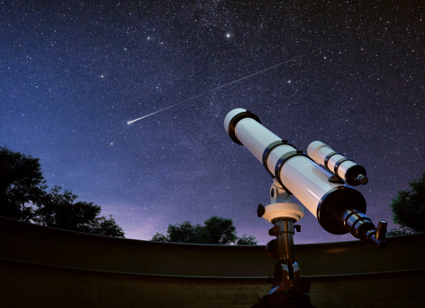
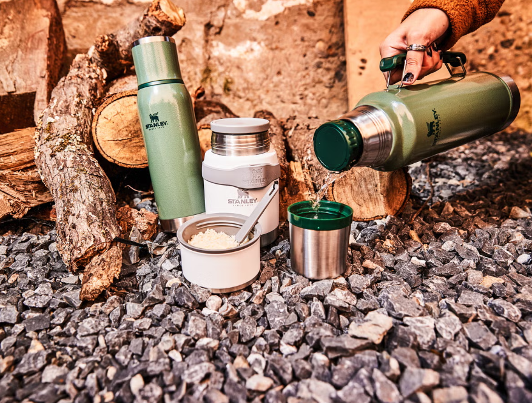
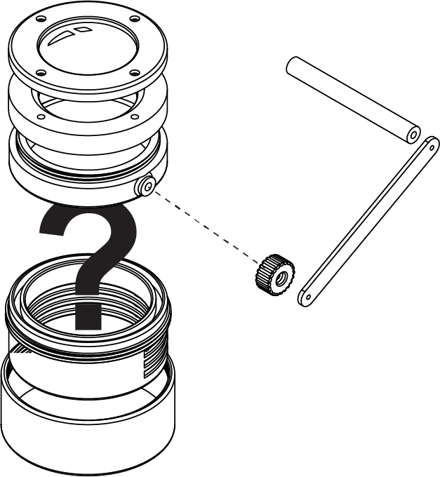
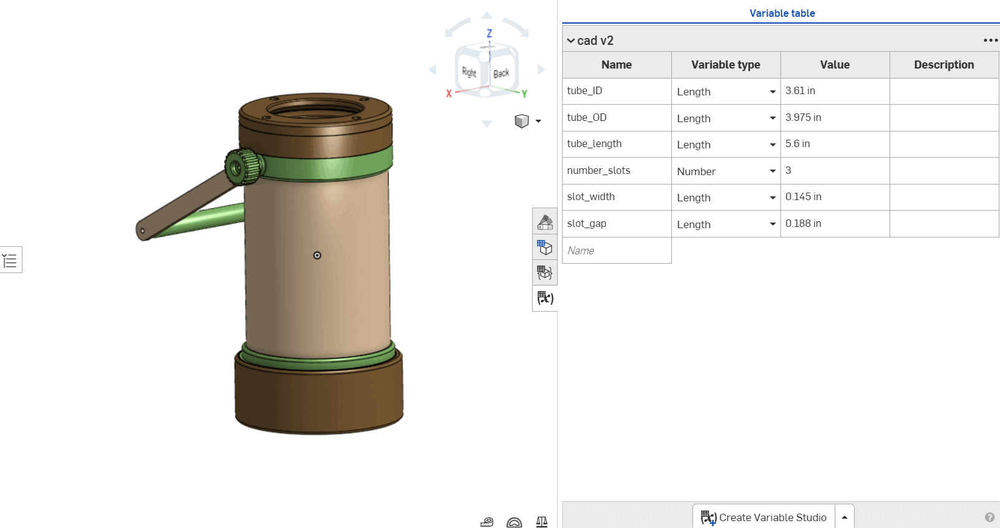
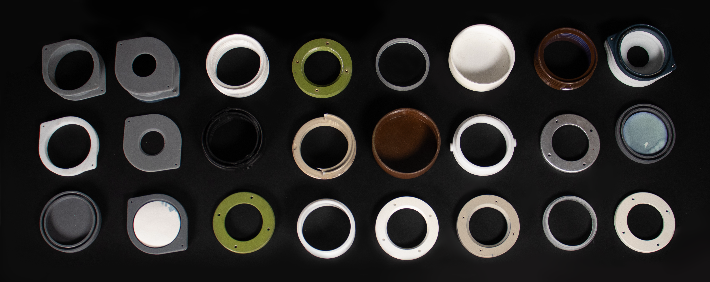
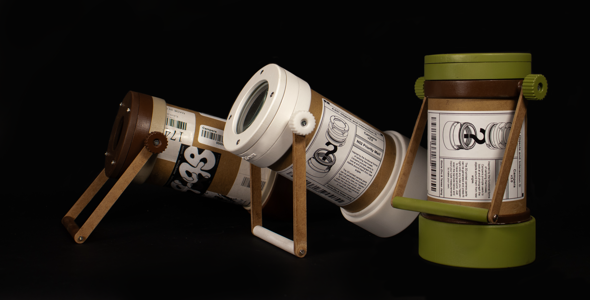
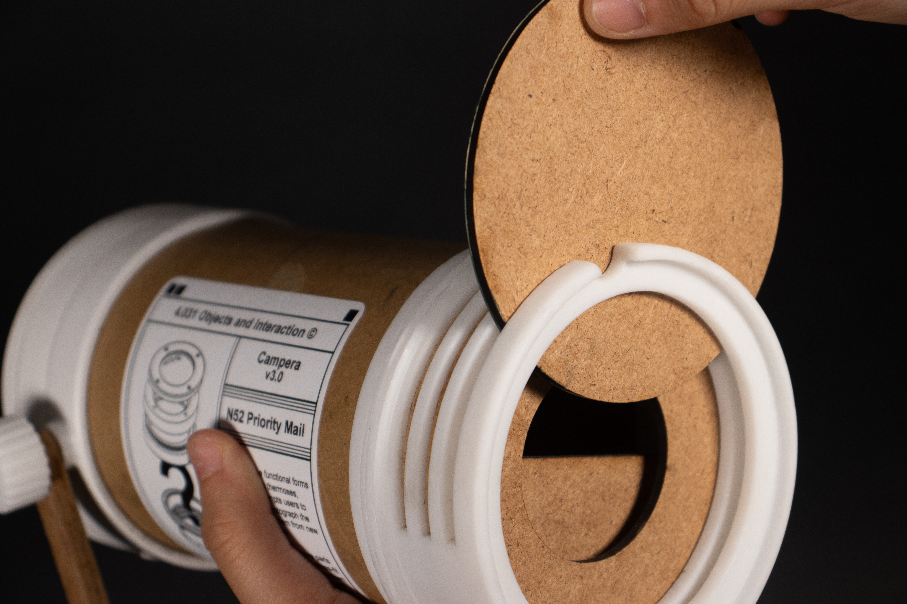
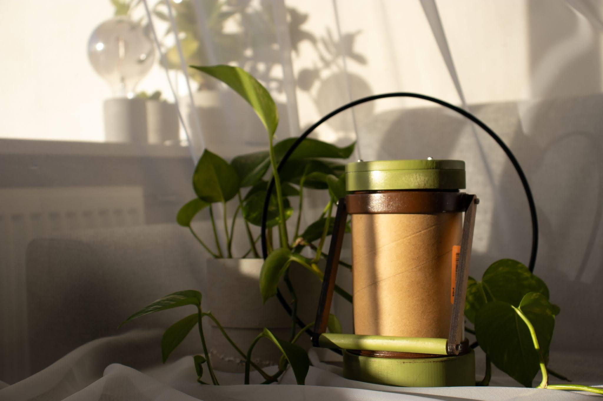
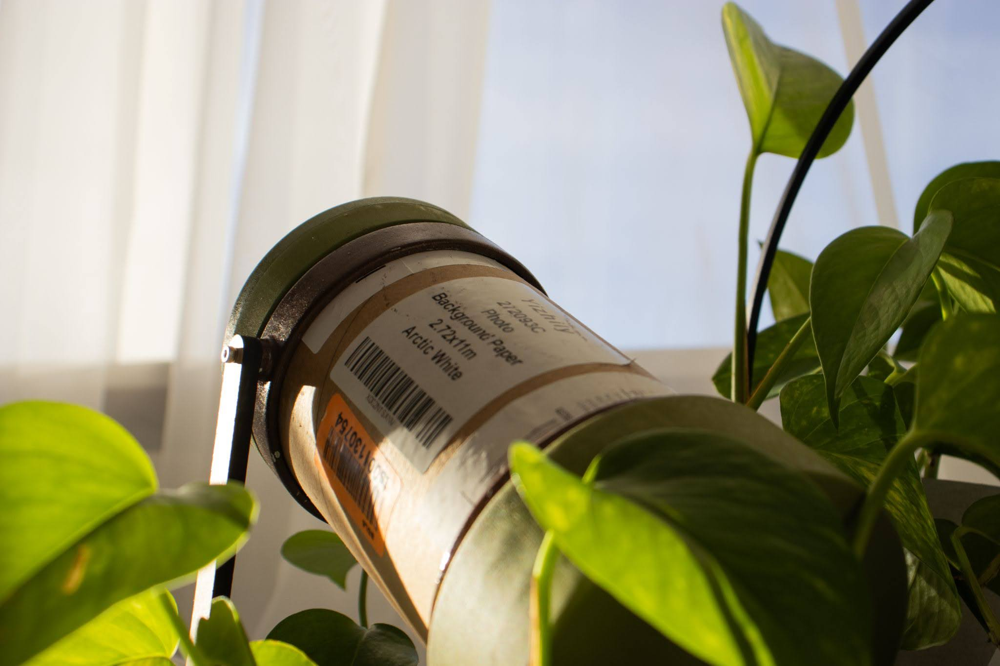

Cyanotype Camera
Class Project (made for 4.031 - Objects and Interaction)
Fall 2024
Fall 2024
Physical Product Design, Parametric CAD
Design Prompt: How can we rethink the analog camera?
When faced with this question, my teammate Teresa and I were initially drawn to the aesthetic of portable outdoorsy equipment such as telescopes and thermoses.
Using a pinhole camera-style setup, we wanted to create an apparatus that could be set up anywhere, pointed in any direction, and produced a long-exposure photograph on cyanotype "film."
our inspiration -->
our inspiration -->



When sourcing materials to prototype with, I realized that the scrap bin in the workshop contained tons of leftover tubing, particularly in cardboard and metal.
Thus, drawing from ideas of material reuse, I wanted to design our camera in such a way that it could be fabricated out of any piece of tubing a user happened to have.
<-- a diagram I made to illustrate this concept
<-- a diagram I made to illustrate this concept
This naturally led to the use of parametric CAD. Essentially, by inputting the input dimensions of their tube, a user can generate
a set of 3D .stl files for the lens cap and film holder, which they can then print and then press fit onto their tube to create a camera
the generator in action -->
the generator in action -->


To design the actual generated files, we went through many different versions of the lens cap and film holder, tweaking tiny details such as
adjusting tolerances and adding indented lips for the user to grab onto. By prototyping with real users, we were able
to rapidly identify pain points such as parts of the design that were confusing or difficult to interact with.
We also tried out different color / material / finish combinations.
<-- some of our prototypes
<-- some of our prototypes
Finally, we landed on a design we liked, featuring:
m a carrying handle that doubled as a stand
f room to store multiple pieces of circular film in the bottom
u an easily adjustable lens cap to accomodate different focal lengths.
three examples we manufactured out of different pieces of recycled tubing -->
m a carrying handle that doubled as a stand
f room to store multiple pieces of circular film in the bottom
u an easily adjustable lens cap to accomodate different focal lengths.
three examples we manufactured out of different pieces of recycled tubing -->

The resulting cyanotype cameras can be rapidly disassembled, assembled, and taken with the user on the road.
You can check out a video of it in use here!



Throughout this project, I learned a lot about the physical prototyping and development process,
including the importance of tiny details, down to the surface finish of an interactable part. Additionally, I witnessed firsthand
how delightful and powerful computation and parametric processes can be in the design process, especially in a reuse context!
